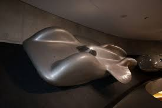

El General Lee(Dodge charger srt 69')

El General Lee es el auto de los protagonistas de la saga de los dukes de Hazzard. Durante el rodado de la serie original se usaron 309 unidades de este Dodge charger 69' srt conocido como el General Lee. Este auto es unp de los mas iconicos en la historia del automovilismo americano. Y lo mejor de todo, nosotros tenemos uno de los 5 ejemplares sobrevivientes originales de la serie
Koenigsegg Gemera
Koenigsegg acaba de romperla con un auto familiar de 2500 caballos de fuerza. Este vehiculo es hibrido, tiene un motor v8 twin turbo y otro motor electrico llamado Dark Matter. Christian Von Koenigsegg siempre nos asombra con sus creaciones pero esta es una cosa de otro planeta. En esta bestia puedes llevar a tu familia de paseo para despues ganar una carrera contra un hyperauto europeo.
Mercedes Benz T80

Que es esto? esto es un cohete sobre ruedas. Este vehiculo fue una operecion secreta alemana para la 2da guerra mundial. Este monstruo esta preparado para correr a 750 km/h y esta montado sobre un motor de caza.
Ford modelo T

Esta belleza producida por Henry Ford en 1908 fue la que lo inicio todo. Tal vez no sea rapido ni poderoso Pero tiene clase y es el primero de la historia.